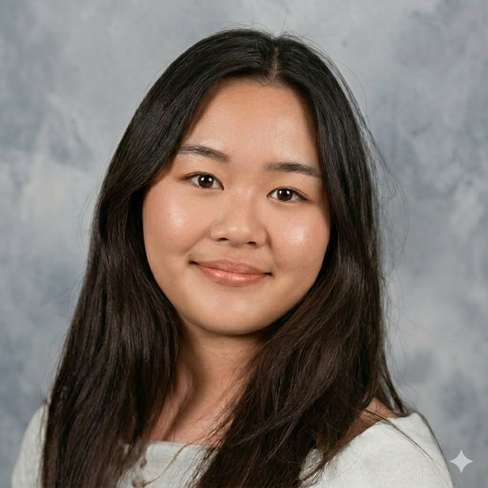

Bioengineering · UCSD · Class of 2026
I design and build at the intersection of biology and hardware, from analog biosensor circuits to prototype medical devices.

I'm a Bioengineering student at UCSD specializing in Biotechnology, with hands-on experience spanning medical device design, analog circuit development, and neuroscience research.
I’m drawn to problems where hardware meets biology, where every design choice at the component level can change what’s possible clinically. I like building things, iterating on them, and understanding exactly why they work or don't.
Currently seeking entry-level mechanical or hardware engineering roles where I can contribute to device development and validation.
Designing and comparing two PPG devices — an integrated MAX30102 sensor and a discrete analog circuit built from scratch — to measure heart rate and study signal quality differences between static and post-exercise conditions.
A series of constraint-driven 3D printed designs iterated for fit, tolerance, and function — including a multi-body interlocking assembly toleranced for FDM printing.
At PreservaBio, designed a mechanism to accurately meter and deliver 50 µg of insulin into a medical device — from patent review through manufacturable CAD prototype.
Contact
Open to entry-level mechanical and hardware engineering roles in medical devices and adjacent industries. Based in San Diego.